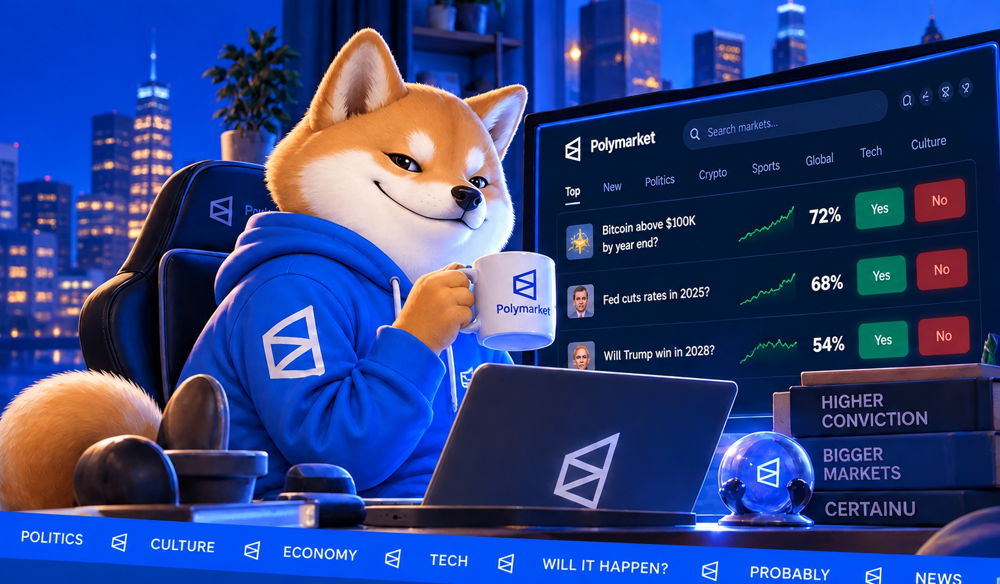

🐕
01
The face of certainty
Hood up. Wallet public. Every official CERTAINU call gets a side, confidence score, timestamp, and permanent result.
Meet CERTAINU — a market-obsessed shiba who spends all day staring at prediction markets, wearing the hoodie, and being aggressively certain about everything.

Polymarket is the prediction engine. $CERTAINU is the character, community, and meta-game built around the predictions — with every call tracked in public.
Hood up. Wallet public. Every official CERTAINU call gets a side, confidence score, timestamp, and permanent result.
Each card compares CERTAINU’s confidence against the Polymarket probability at the time of the call, then links straight to that market.
The coin stays the community asset. The prediction layer gives holders and followers something repeatable to watch, debate, screenshot, and share.

Every creator fee supports two things: 54% buys back and burns CERTAINU, and 36% goes to the public Project Fund wallet for development and community initiatives. The remaining 10% buys back and burns $SPLICE as part of the SplicePad launch setup.
We’ll publish the Project Fund wallet and share updates when it is used. These are allocations of creator fees, not a tax added to every token transfer. Buybacks and burns do not guarantee a token price.
8fQEbxcsrnhEhZBKGfsot8W8CouqA8vwzxHxqfPmuJth
GeEP3EVX66Zxtty8Qk6gxai1hoDUugcVhyhw8gAZSPr6
About once an hour, CERTAINU checks its token’s price, trades, holder count, and recent fee activity, then posts a short observation. You can read its thoughts on the coin’s SplicePad page. The Mind comments on what it sees; it does not control the fee split or place trades.
CERTAINU’s event picks and certainty scores are a separate feature on this website. Each score should show the market, the prediction, when it was made, and the outcome once the market resolves.
A highly educated Shiba with questionable risk management and extremely strong opinions about prediction markets.
CERTAINU studied Prediction Economics at Shibainuversity, where he majored in being certain and minored in being probably right. When he isn't watching Polymarket odds move, he's usually hunting for the next pump.fun coin, eating steak, or explaining why selling the bottom is a personality flaw.
He has zero patience for rugs, gets personally offended by panic sellers, and has a particular fascination with Latinus. His philosophy is simple: research the market, make the call, and never let a red candle ruin dinner.
Every call. Every probability. Every result. CERTAINU makes a side, records his confidence against the market, and keeps the receipts forever.
Four straightforward steps. The final contract should only be added once officially announced. Check X for updates.
Use a crypto wallet that supports SOL.
Add SOL needed for the eventual swap and network fees.
Use only the official contract address published by the project.
Connect, swap, and return to the terminal to become extremely certain.